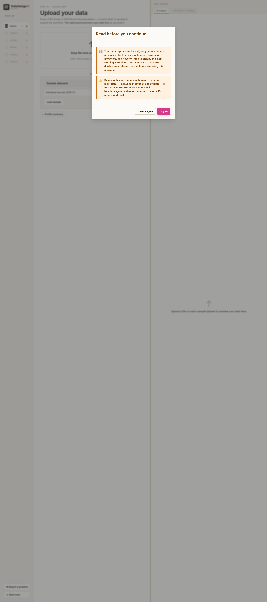
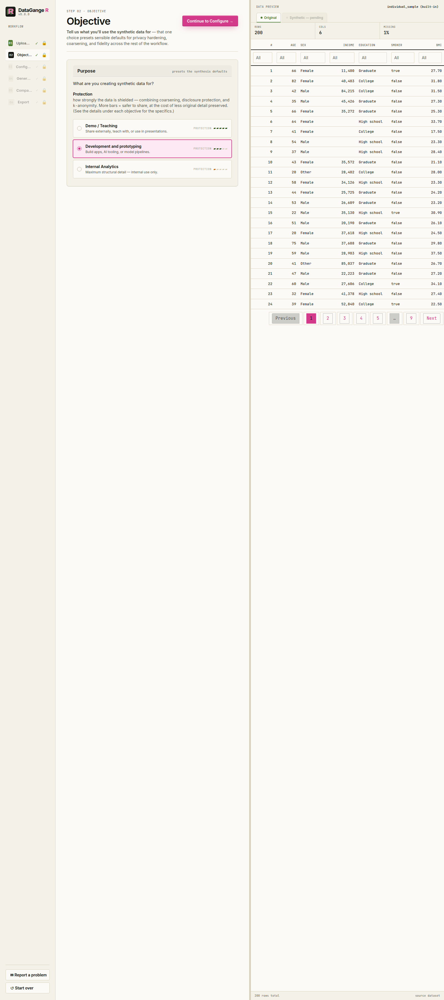
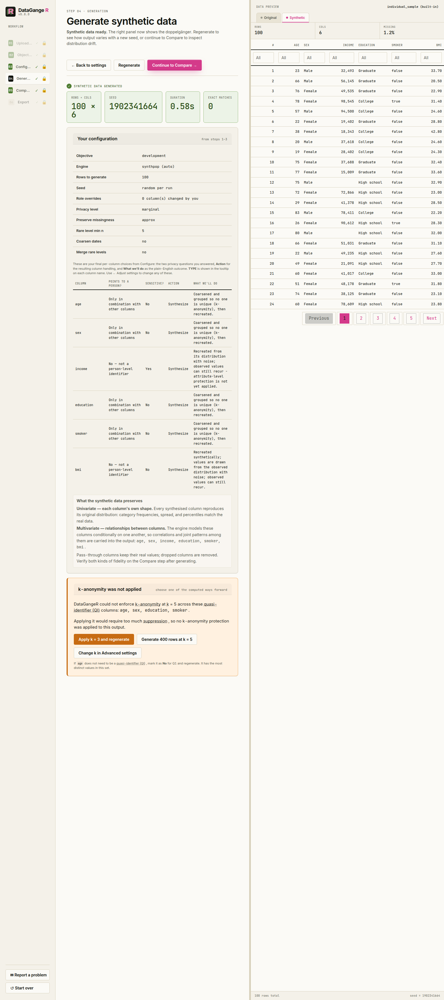
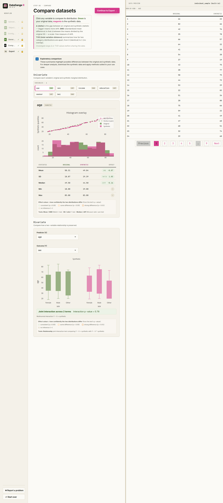
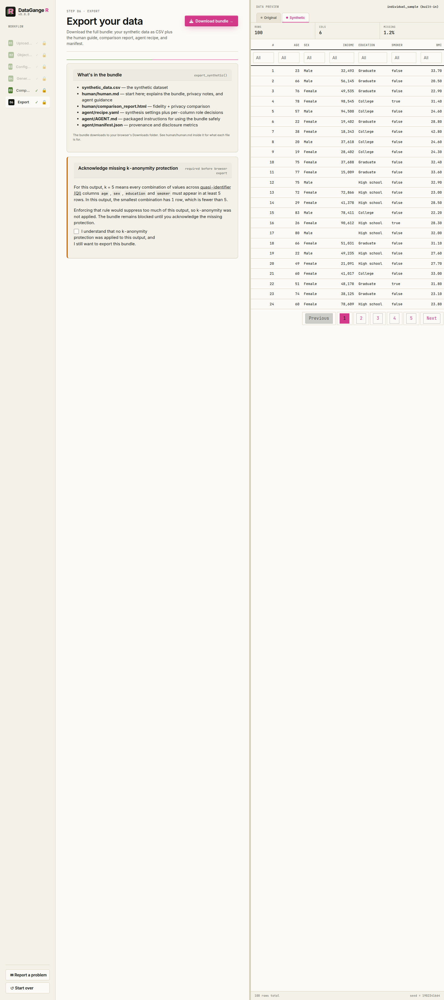

The DataGangeR Shiny app guides you from a real dataset to a shareable synthetic double in six steps. Launch it with:
Every screen mirrors a plain function call, so anything you do here you can also script from the R console (see Use it from R in the README).
1. Upload
Drop in a CSV, Excel, or SAS file — or load one of the built-in sample datasets to explore the workflow without any real data. The right-hand panel previews your data live as it loads.

2. Objective
Next, tell DataGangeR what the synthetic data is for. Instead of separate Fidelity / Privacy / Anonymity meters, the app shows one Protection meter: Demo / Teaching = 5 bars, Development and prototyping = 3 bars, and Internal Analytics = 1 bar. Development is the default objective.
When you click an objective, the detail panel explains it along the same dimensions every time: Use when, Exact values, Distributions, Relationships, Identifiers, and Sensitive & rare values. That keeps the trade-off readable without making you interpret multiple competing meters.

3. Configure
This is where you, the human, make the decisions. Nothing is generated until you have reviewed them. The screen is built around privacy-first column classification, plus the synthesis settings described below.

Per-column decisions. Each row now asks two intrinsic questions:
-
Does this point to a person?
- No — blood pressure, lab value, score, price, outcome
- Only combined with other columns — age, sex, ZIP / postcode, birth date, job title
- Yes, directly — name, email, phone, address, Social Security number, record / account number
-
Is it sensitive?
- No or Yes — mark Yes for values like diagnosis, income, religion, or anything that would cause harm if linked back to a person
You do not choose the action separately in the normal flow. DataGangeR derives it from those two answers. On Configure, the per-column Action override cell exposes optional Action and Data type overrides directly if you need them. The plain-English outcome is reviewed on the Generate step:
| sensitive = No | sensitive = Yes | |
|---|---|---|
| identifies = none | Synthesized; distribution kept, exact values not. | Recreated from its distribution; exact values are not copied — attribute-level protection is not yet applied. |
| identifies = combination | Coarsened & grouped (k-anonymity), then synthesized. | Synthesized; grouped with k-anonymity so no rare combination survives. |
| identifies = direct | Removed from the output. | Removed from the output. |
Direct identifiers always drop. Everything non-direct is synthesized. Every column still needs an explicit answer to the first question before you can generate.
Synthesis settings. The objective you picked presets safe defaults. The app keeps overrides in a collapsed Advanced settings disclosure; open it only when you need to change one of these:
| Setting | What you are deciding |
|---|---|
| Row count (n) | How many synthetic rows to generate. |
| Seed | Fixes the random draw so the same settings reproduce the exact same data. |
| Engine | Auto (from objective), Internal (per-column, fast, ignores relationships), or synthpop (relationship-aware, higher fidelity). |
| Column name handling | Keep original names, replace with generic names, or anonymize names and keep the mapping. |
| Rare category threshold | Values seen fewer than this many times count as rare, so they can be merged or suppressed. |
| Coarsen dates | Round dates (e.g. to month/year) so an exact date can’t single out an individual. |
| Merge rare categories | Combine infrequent values into an “other” group to reduce re-identification risk. |
| Free-text handling | How free-text columns are treated (usually set by your objective). |
| Preserve missing values | How closely to reproduce the original pattern of missing
(NA) values. |
Defaults are safe for the objective you picked — leave them unless
you have a reason to change them. Each control in the app also carries a
one-line explanation, and every decision is recorded in the exported
spec so the result is reproducible (see synth_spec() for
the programmatic equivalents).
4. Generate
Before anything is generated, this step shows a per-column review table that mirrors your Configure choices and spells out the outcome: the two questions you answered (Points to a person? and Sensitive?), the resulting Action (synthesize, pass through, or drop), and a plain-English What we’ll do for each column. Hover a column name to see how it will be modelled. If anything looks wrong, use ← Adjust settings to go back; otherwise generate the synthetic double. The banner reinforces those choices rather than implying that generation has already started. The summary then reports row and column counts, the engine used, and the elapsed time, and the right panel automatically previews the synthetic records after every generation.

5. Compare
Inspect how faithfully the synthetic data mirrors the original. Pick any variable in Univariate to see overlaid distributions (green is your original data, magenta is synthetic), a Q–Q plot, and a side-by-side statistics table. Use Bivariate to select a predictor X and outcome Y. DataGangeR pools the original and synthetic rows and tests the X-by-synthetic interaction, so a low p-value means that relationship was modified and has poorer fidelity. The effect is an odds ratio for binary outcomes, slope ratio for counts, difference in slope for continuous outcomes, or a joint test for multi-level categorical outcomes. The exported comparison report includes the same interaction results for every eligible unordered pair, with the earlier data column used as X.

6. Export
The download is a single bundle: the synthetic CSV at the root, plus one folder for the human and one for the agent.
synthetic_data.csv # the synthetic stand-in — the product
human/human.md # what was done, plus the privacy notes
human/comparison_report.html # real vs. synthetic fidelity (if generated)
agent/recipe.yaml # spec + roles + seed — regenerate safe data
agent/AGENT.md # the agent workflow guide
agent/manifest.jsonhuman/human.md is consolidated: it folds in the privacy
summary, so there is no separate privacy file.
agent/recipe.yaml records the spec, the per-column roles,
and the seed, so an agent can regenerate or vary the synthetic data
without ever reading the real data — see the Privacy gating and Agent
workflows article.

Remember: synthetic data reduces direct disclosure risk; it does not replace a formal privacy assessment. Review the comparison and privacy warnings before sharing any output externally.
Reporting problems and feedback
If something feels off, you can open a pre-filled GitHub issue straight from R:
report_issue("The export summary was confusing", context = "Shiny app")The Shiny app also includes a Report a problem button in the sidebar. Both paths print a pre-filled GitHub issue URL and issue body for you to review and copy, but they do not send anything automatically - you stay in control of what gets submitted.